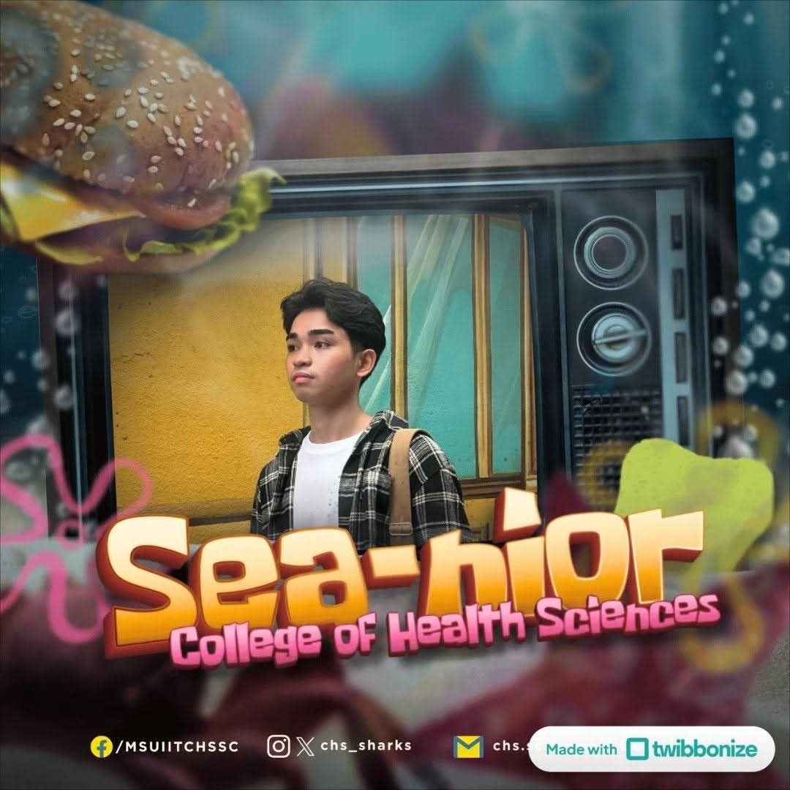

<!DOCTYPE html>
<html lang="en">
<head>
    <meta charset="UTF-8">
    <meta name="viewport" content="width=device-width, initial-scale=1.0">
    <title>John R. Villahermosa | An Autobiographical Journey</title>
    <!-- Google Fonts for Typography -->
    <link rel="preconnect" href="https://fonts.googleapis.com">
    <link rel="preconnect" href="https://fonts.gstatic.com" crossorigin>
    <link href="https://fonts.googleapis.com/css2?family=Cinzel:wght@600;700&family=Plus+Jakarta+Sans:wght@300;400;500;600;700&display=swap" rel="stylesheet">
    
    <style>
        /* ==========================================
           RESET & DESIGN SYSTEM (Blue Palette)
           ========================================== */
        :root {
            --primary-blue: #0b2545;
            --header-blue: #134074;
            --accent-blue: #0077b6;
            --soft-blue: #e0f2fe;
            --light-bg: #f4f7fb;
            --card-bg: #ffffff;
            --text-dark: #0f172a;
            --text-muted: #475569;
            --shadow-sm: 0 2px 8px rgba(11, 37, 69, 0.06);
            --shadow-md: 0 10px 25px rgba(11, 37, 69, 0.12);
            --radius-lg: 16px;
            --radius-md: 10px;
            --transition: all 0.3s ease;
        }

        * {
            margin: 0;
            padding: 0;
            box-sizing: border-box;
        }

        html {
            scroll-behavior: smooth;
            font-size: 16px;
        }

        body {
            font-family: 'Plus Jakarta Sans', sans-serif;
            background-color: var(--light-bg);
            color: var(--text-dark);
            line-height: 1.7;
        }

        a {
            text-decoration: none;
            color: inherit;
        }

        ul {
            list-style: none;
        }

        /* ==========================================
           HEADER & NAVIGATION BAR
           ========================================== */
        header {
            position: sticky;
            top: 0;
            z-index: 1000;
            background-color: var(--header-blue);
            box-shadow: 0 4px 12px rgba(11, 37, 69, 0.2);
        }

        .nav-container {
            max-width: 1200px;
            margin: 0 auto;
            display: flex;
            justify-content: space-between;
            align-items: center;
            padding: 1rem 2rem;
        }

        .site-logo {
            font-family: 'Cinzel', serif;
            font-size: 1.35rem;
            font-weight: 700;
            color: #ffffff;
            letter-spacing: 0.5px;
        }

        .nav-links {
            display: flex;
            gap: 1.5rem;
            align-items: center;
        }

        .nav-link {
            color: rgba(255, 255, 255, 0.88);
            font-weight: 500;
            font-size: 0.95rem;
            padding: 0.5rem 1rem;
            border-radius: 6px;
            transition: var(--transition);
        }

        .nav-link:hover, .nav-link.active {
            color: #ffffff;
            background-color: rgba(255, 255, 255, 0.18);
            transform: translateY(-1px);
        }

        /* ==========================================
           HERO / WELCOME SECTION
           ========================================== */
        .hero-section {
            background: linear-gradient(135deg, var(--primary-blue) 0%, var(--header-blue) 100%);
            color: #ffffff;
            text-align: center;
            padding: 5.5rem 1.5rem;
            position: relative;
        }

        .hero-content {
            max-width: 800px;
            margin: 0 auto;
        }

        .hero-subtitle {
            text-transform: uppercase;
            letter-spacing: 3px;
            font-size: 0.85rem;
            color: #38bdf8;
            font-weight: 700;
            margin-bottom: 0.75rem;
        }

        .hero-title {
            font-family: 'Cinzel', serif;
            font-size: 3.2rem;
            font-weight: 700;
            line-height: 1.2;
            margin-bottom: 1.25rem;
        }

        .hero-description {
            font-size: 1.15rem;
            color: #e2e8f0;
            font-weight: 300;
            margin-bottom: 2rem;
        }

        .cta-button {
            display: inline-block;
            background-color: var(--soft-blue);
            color: var(--primary-blue);
            padding: 0.85rem 2rem;
            border-radius: 50px;
            font-weight: 700;
            transition: var(--transition);
            box-shadow: var(--shadow-sm);
        }

        .cta-button:hover {
            background-color: #ffffff;
            transform: translateY(-3px);
            box-shadow: var(--shadow-md);
        }

        /* ==========================================
           MAIN CONTENT & LAYOUT
           ========================================== */
        main {
            max-width: 1100px;
            margin: 0 auto;
            padding: 3rem 1.5rem;
        }

        .content-section {
            background-color: var(--card-bg);
            border-radius: var(--radius-lg);
            padding: 3rem 2.5rem;
            margin-bottom: 3.5rem;
            box-shadow: var(--shadow-sm);
            border: 1px solid rgba(11, 37, 69, 0.05);
            scroll-margin-top: 100px;
        }

        .section-header {
            margin-bottom: 2rem;
            border-bottom: 3px solid var(--soft-blue);
            padding-bottom: 0.75rem;
            display: flex;
            align-items: center;
            justify-content: space-between;
        }

        .section-title {
            font-family: 'Cinzel', serif;
            font-size: 2rem;
            color: var(--primary-blue);
        }

        .section-tag {
            font-size: 0.8rem;
            font-weight: 700;
            text-transform: uppercase;
            letter-spacing: 1.5px;
            color: var(--accent-blue);
            background-color: var(--soft-blue);
            padding: 0.35rem 0.85rem;
            border-radius: 20px;
        }

        /* ==========================================
           SECTION 1: MY STORY (ENRICHED & POLISHED)
           ========================================== */
        .story-grid {
            display: grid;
            grid-template-columns: 1fr 1.8fr;
            gap: 2.5rem;
            align-items: start;
        }

        .profile-card {
            background-color: #f8fafc;
            border-radius: var(--radius-md);
            padding: 1.5rem;
            text-align: center;
            border: 1px solid #e2e8f0;
            box-shadow: var(--shadow-sm);
        }

        .profile-img-wrapper {
            width: 100%;
            max-width: 240px;
            height: 240px;
            margin: 0 auto 1.25rem;
            border-radius: 16px;
            overflow: hidden;
            border: 4px solid var(--soft-blue);
            box-shadow: var(--shadow-md);
        }

        .profile-img-wrapper img {
            width: 100%;
            height: 100%;
            object-fit: cover;
            object-position: center;
        }

        .profile-name {
            font-size: 1.25rem;
            font-weight: 700;
            color: var(--primary-blue);
        }

        .profile-role {
            font-size: 0.9rem;
            color: var(--accent-blue);
            font-weight: 600;
            margin-bottom: 1rem;
        }

        .info-list {
            text-align: left;
            font-size: 0.9rem;
            border-top: 1px solid #e2e8f0;
            padding-top: 1rem;
        }

        .info-list li {
            margin-bottom: 0.5rem;
            display: flex;
            justify-content: space-between;
        }

        .info-list strong {
            color: var(--text-dark);
        }

        .story-text p {
            margin-bottom: 1.25rem;
            color: var(--text-muted);
            font-size: 1.05rem;
        }

        /* ==========================================
           SECTION 2: PASSIONS & PURSUITS (HOBBIES)
           ========================================== */
        .hobbies-grid {
            display: grid;
            grid-template-columns: repeat(auto-fit, minmax(230px, 1fr));
            gap: 1.5rem;
        }

        .hobby-card {
            background-color: #ffffff;
            border-radius: var(--radius-md);
            padding: 1.75rem;
            border: 1px solid #edf2f7;
            box-shadow: var(--shadow-sm);
            transition: var(--transition);
        }

        .hobby-card:hover {
            transform: translateY(-5px);
            box-shadow: var(--shadow-md);
            border-color: var(--accent-blue);
        }

        .hobby-icon {
            font-size: 2.2rem;
            margin-bottom: 1rem;
            display: inline-block;
        }

        .hobby-title {
            font-size: 1.15rem;
            font-weight: 700;
            color: var(--primary-blue);
            margin-bottom: 0.5rem;
        }

        .hobby-desc {
            font-size: 0.92rem;
            color: var(--text-muted);
        }

        /* ==========================================
           SECTION 3: MILESTONES & FOOTPRINTS (RESUME)
           ========================================== */
        .timeline {
            position: relative;
            padding-left: 2rem;
            border-left: 3px solid var(--soft-blue);
        }

        .timeline-item {
            position: relative;
            margin-bottom: 2rem;
        }

        .timeline-item::before {
            content: '';
            position: absolute;
            left: -2.7rem;
            top: 0.3rem;
            width: 16px;
            height: 16px;
            border-radius: 50%;
            background-color: var(--header-blue);
            border: 3px solid #ffffff;
            box-shadow: 0 0 0 2px var(--accent-blue);
        }

        .timeline-date {
            font-size: 0.82rem;
            font-weight: 700;
            color: var(--accent-blue);
            text-transform: uppercase;
            letter-spacing: 1px;
            margin-bottom: 0.25rem;
        }

        .timeline-title {
            font-size: 1.2rem;
            font-weight: 700;
            color: var(--primary-blue);
        }

        .timeline-sub {
            font-size: 0.95rem;
            font-weight: 600;
            color: var(--text-dark);
            margin-bottom: 0.5rem;
        }

        .timeline-desc {
            font-size: 0.95rem;
            color: var(--text-muted);
        }

        /* ==========================================
           SECTION 4: TESTIMONIALS
           ========================================== */
        .testimonials-grid {
            display: grid;
            grid-template-columns: repeat(auto-fit, minmax(280px, 1fr));
            gap: 1.75rem;
        }

        .testimonial-card {
            background-color: #f8fafc;
            border-radius: var(--radius-md);
            padding: 2rem;
            position: relative;
            border-left: 4px solid var(--accent-blue);
            box-shadow: var(--shadow-sm);
        }

        .quote-mark {
            font-family: 'Cinzel', serif;
            font-size: 3.5rem;
            color: rgba(0, 119, 182, 0.15);
            position: absolute;
            top: 0.5rem;
            right: 1.25rem;
            line-height: 1;
        }

        .testimonial-text {
            font-style: italic;
            color: var(--text-dark);
            font-size: 0.98rem;
            margin-bottom: 1.25rem;
            position: relative;
            z-index: 1;
        }

        .author-name {
            font-weight: 700;
            color: var(--primary-blue);
            font-size: 0.95rem;
        }

        .author-role {
            font-size: 0.82rem;
            color: var(--text-muted);
        }

        /* ==========================================
           FOOTER
           ========================================== */
        footer {
            background-color: var(--primary-blue);
            color: #ffffff;
            text-align: center;
            padding: 2.5rem 1.5rem;
            margin-top: 4rem;
        }

        .footer-text {
            font-size: 0.9rem;
            color: #cbd5e1;
        }

        .footer-copy {

</head>
<body>

    <!-- NAVIGATION HEADER -->
    <header>
        <div class="nav-container">
            <div class="site-logo">John's Autobiography</div>
            <nav>
                <ul class="nav-links">
                    <li><a href="#story" class="nav-link active">My Story</a></li>
                    <li><a href="#hobbies" class="nav-link">Hobbies</a></li>
                    <li><a href="#milestones" class="nav-link">Milestones</a></li>
                    <li><a href="#testimonials" class="nav-link">Testimonials</a></li>
                </ul>
            </nav>
        </div>
    </header>

    <!-- HERO SECTION -->
    <section class="hero-section">
        <div class="hero-content">
            <p class="hero-subtitle">Personal Portfolio & Memoir</p>
            <h1 class="hero-title">Welcome to My Page</h1>
            <p class="hero-description">Charting a story of clinical dedication, academic excellence, and life as a 4th Year Nursing Student.</p>
            <a href="#story" class="cta-button">Explore My Story</a>
        </div>
    </section>

    <!-- MAIN CONTENT AREA -->
    <main>

        <!-- SECTION 1: MY STORY (ENRICHED & POLISHED) -->
        <section id="story" class="content-section">
            <div class="section-header">
                <h2 class="section-title">The Origin Story</h2>
                <span class="section-tag">About Me</span>
            </div>
            <div class="story-grid">
                <div class="profile-card">
                    <div class="profile-img-wrapper">
                        
                    </div>
                    <h3 class="profile-name">John R. Villahermosa</h3>
                    <p class="profile-role">BS Nursing</p>
                    <ul class="info-list">
                        <li><strong>Age:</strong> 20</li>
                        <li><strong>College:</strong> College of Health Sciences</li>
                        <li><strong>Level:</strong> Level IV</li>
                        <li><strong>Family:</strong> Youngest of 4 Siblings</li>
                        <li><strong>Focus:</strong> Acute & Specialized Care</li>
                    </ul>
                </div>
                <div class="story-text">
                    <p>Every journey begins with a foundation, and mine was built within a vibrant, close-knit family as the youngest of four siblings—a home rendered uniquely colorful, as my sister is a lesbian and I also have a transgender sibling. Raised by my hardworking and humorous father, a businessman, and guided by my inspiring mother, a dedicated educator, I grew up absorbing lessons in patience, humility, and quiet resilience. Being surrounded by such strong, open, and nurturing influences taught me early on that true leadership begins with listening carefully and caring deeply.</p>
                    <p>That foundation propelled me through years of academic excellence, ultimately leading to my calling at Mindanao State University – Iligan Institute of Technology. Now standing as a Level IV student nurse candidate in the College of Health Sciences, my days are defined by a commitment to high standards as a Latin Honor candidate alongside intense, hands-on clinical immersion. From the focused silence of the Operating Room to the swift, delicate moments in the Delivery Room, NICU, and Emergency units, I have learned to be a calm, level-headed presence when people need it most.</p>
                    <p>Beyond the clinical corridors, I believe in living an intentional, grounded life. Whether resetting my mind with a quick game of pickleball, a jog along Twin Road, diving into immersive fantasy stories, or sharing lighthearted moments and wisdom with my closest circle of friends, I carry that same steady spirit. As I approach graduation, my eyes are set on mastering acute and specialized critical care—bringing technical excellence and genuine human warmth to every life I touch.</p>
                </div>
            </div>
        </section>

        <!-- SECTION 2: PASSIONS & PURSUITS (HOBBIES) -->
        <section id="hobbies" class="content-section">
            <div class="section-header">
                <h2 class="section-title">Passions & Pursuits</h2>
                <span class="section-tag">Hobbies & Leisure</span>
            </div>
            <div class="hobbies-grid">
                <div class="hobby-card">
                    <span class="hobby-icon">🏓</span>
                    <h3 class="hobby-title">Pickleball & Racket Sports</h3>
                    <p class="hobby-desc">An active pickleball player with foundational experience in table tennis and lawn tennis, enjoying dynamic court strategy and competitive movement.</p>
                </div>
                <div class="hobby-card">
                    <span class="hobby-icon">📺</span>
                    <h3 class="hobby-title">Fantasy & BL Series</h3>
                    <p class="hobby-desc">Binge-watching immersive fantasy worlds and engaging Boys' Love (BL) series, enjoying compelling narrative arcs to unwind after intensive study schedules.</p>
                </div>
                <div class="hobby-card">
                    <span class="hobby-icon">🏃‍♂️</span>
                    <h3 class="hobby-title">Running & Outdoor Jogging</h3>
                    <p class="hobby-desc">Building physical endurance and mental clarity through regular runs, frequently pacing along the scenic open stretches of Twin Road.</p>
                </div>
                <div class="hobby-card">
                    <span class="hobby-icon">📖</span>
                    <h3 class="hobby-title">BL Manga & Manhwa</h3>
                    <p class="hobby-desc">Delving into rich illustrated stories, expressive art styles, and emotional character dynamics through Boys' Love manga and manhwa.</p>
                </div>
            </div>
        </section>

        <!-- SECTION 3: MILESTONES & FOOTPRINTS (RESUME) -->
        <section id="milestones" class="content-section">
            <div class="section-header">
                <h2 class="section-title">Milestones & Footprints</h2>
                <span class="section-tag">Academic & Clinical Journey</span>
            </div>
            <div class="timeline">
                <div class="timeline-item">
                    <div class="timeline-date">2023 – Present | MSU-IIT</div>
                    <h3 class="timeline-title">Bachelor of Science in Nursing</h3>
                    <div class="timeline-sub">College of Health Sciences -- Mindanao State University – Iligan Institute of Technology</div>
                    <p class="timeline-desc">Started in 2023 and currently standing as a 4th-year senior nurse candidate. Maintained high academic standing as a consistent <strong>Chancellor's Lister</strong> while fulfilling rigorous clinical requirements.</p>
                </div>
                <div class="timeline-item">
                    <div class="timeline-date">Clinical Practice & Rotations</div>
                    <h3 class="timeline-title">Comprehensive Clinical Exposure</h3>
                    <div class="timeline-sub">Specialized Hospital Units & Field Work</div>
                    <p class="timeline-desc">Gained diverse clinical exposure across general Medical-Surgical Wards, Delivery Room (DR) area and Neonatal Intensive Care Unit (NICU), Operating Room (student scrub and circulating nurse), Neuro Ward, Emergency Room, ICU, and Psychiatric Nursing clinical rotation in Cebu. Certified in Basic Life Support (BLS).</p>
                </div>
                <div class="timeline-item">
                    <div class="timeline-date">Senior High School</div>
                    <h3 class="timeline-title">Western Mindanao Adventist Academy</h3>
                    <div class="timeline-sub">Batch Valedictorian & Consistent Honor</div>
                    <p class="timeline-desc">Completed secondary education with top academic honors, graduating as the Batch Valedictorian through consistent academic dedication and active leadership.</p>
                </div>
                <div class="timeline-item">
                    <div class="timeline-date">Junior High School</div>
                    <h3 class="timeline-title">Dumingag National High School</h3>
                    <div class="timeline-sub">STE Curriculum & Consistent Honor</div>
                    <p class="timeline-desc">Studied under the specialized Science, Technology, and Engineering (STE) Curriculum, maintaining consistent honor standing throughout junior high school.</p>
                </div>
                <div class="timeline-item">
                    <div class="timeline-date">Elementary Education</div>
                    <h3 class="timeline-title">Licabang Elementary School</h3>
                    <div class="timeline-sub">Batch Valedictorian</div>
                    <p class="timeline-desc">Graduated at the head of the class as Batch Valedictorian, laying a strong foundation of discipline, curiosity, and academic excellence.</p>
                </div>
            </div>
        </section>

        <!-- SECTION 4: ECHOES & REFLECTIONS (TESTIMONIALS) -->
        <section id="testimonials" class="content-section">
            <div class="section-header">
                <h2 class="section-title">Echoes & Reflections</h2>
                <span class="section-tag">Testimonials</span>
            </div>
            <div class="testimonials-grid">
                <div class="testimonial-card">
                    <span class="quote-mark">"</span>
                    <p class="testimonial-text">"John is naturally fun and easy to be around—quick-witted, genuinely wise, and someone who always shares insightful quotes and thoughtful advice. He is truly a wonderful friend."</p>
                    <div class="author-name">Nicole Unggay</div>
                    <div class="author-role">Close Friend</div>
                </div>
                <div class="testimonial-card">
                    <span class="quote-mark">"</span>
                    <p class="testimonial-text">"John is a true social butterfly. He is naturally warm, friendly, and effortlessly easy to get along with, bringing comfort and lighthearted ease to everyone around him."</p>
                    <div class="author-name">Blaizel Mendoza</div>
                    <div class="author-role">Close Friend</div>
                </div>
                <div class="testimonial-card">
                    <span class="quote-mark">"</span>
                    <p class="testimonial-text">"John has always been my moral compass. Whenever I feel overwhelmed or start going off track, he grounds me and reminds me to stay calm and level-headed. On top of that, he is a natural athlete who picks up sports remarkably fast."</p>
                    <div class="author-name">Arnie Dyl Jadol</div>
                    <div class="author-role">Close Friend</div>
                </div>
            </div>
        </section>

    </main>

    <!-- FOOTER -->
    <footer>
        <div class="footer-text">Crafted with pride for the Web Development Autobiography Project.</div>
        <div class="footer-copy">&copy; Copyright John R. Villahermosa. All Rights Reserved.</div>
    </footer>

</body>
</html>
